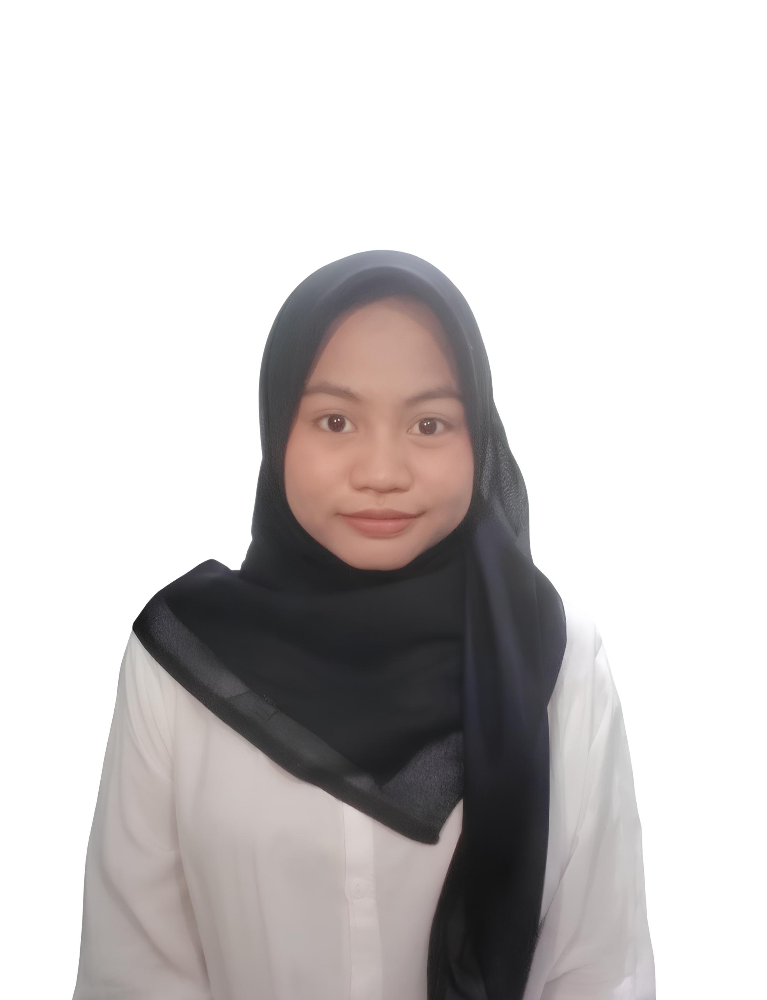
Berawal dari rasa penasaran, tumbuh menjadi ketertarikan pada dunia teknologi
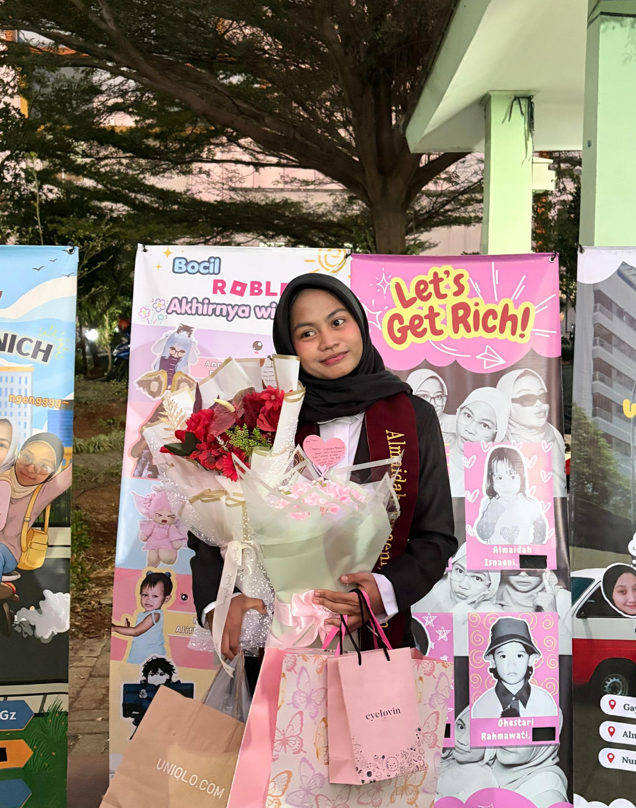
Hi! I'm Almaidah Isnaeni but you can call me Alma
Saya adalah lulusan Teknik Informatika yang tertarik dengan dunia teknologi, khususnya analisis sistem, dokumentasi, dan kreativitas digital. Saya senang memahami bagaimana sebuah sistem bekerja, menggali kebutuhan pengguna, serta menuangkan ide dan proses tersebut ke dalam dokumentasi yang terstruktur dan mudah dipahami.
Bagi saya, membuat sebuah aplikasi bukan hanya tentang menulis kode, tetapi juga tentang memahami kebutuhan di baliknya, menyusun alur yang tepat, dan memastikan semuanya dapat berjalan sesuai tujuan. Saya juga menikmati proses merancang tampilan antarmuka dan mengeksplorasi ide-ide kreatif untuk menciptakan pengalaman pengguna yang menarik dan nyaman.
Setiap kemampuan menjadi bagian dari proses saya untuk terus belajar, berkembang, dan menciptakan hal baru.
Memahami kebutuhan pengguna, menganalisis permasalahan, serta menyusun dokumentasi sebagai acuan dalam proses pengembangan sistem.
Menguji fungsionalitas aplikasi untuk memastikan setiap fitur berjalan sesuai kebutuhan dan hasil yang diharapkan.
Merancang tampilan antarmuka dan mengembangkan konsep visual yang menarik, nyaman digunakan, serta sesuai dengan kebutuhan pengguna.
Mengenal proses pengembangan website dan aplikasi mobile melalui berbagai proyek.
Menggunakan teknologi pendukung dalam proses pengembangan aplikasi.
Kemampuan non-teknis yang mendukung kerja sehari-hari, baik secara individu maupun dalam tim.
Setiap pengalaman punya cerita dan prosesnya sendiri. Dari belajar di lingkungan profesional hingga mengembangkan kreativitas melalui berbagai proyek desain.
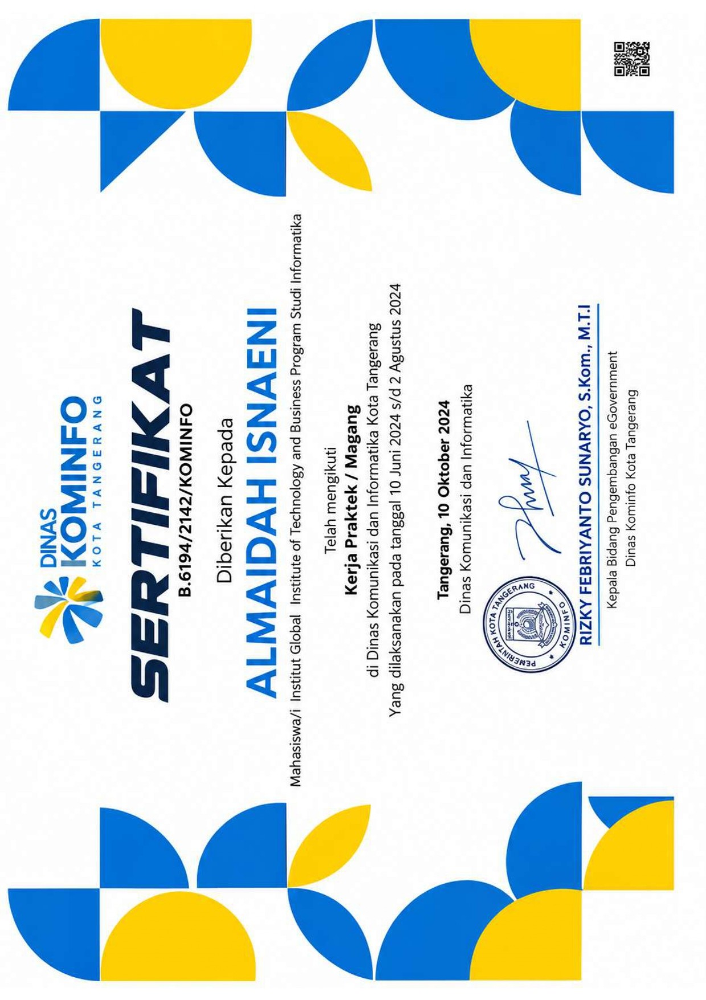
InternshipDinas Komunikasi dan Informatika Kota Tangerang
Selama menjalani program magang di Divisi E-Government Dinas Komunikasi dan Informatika Kota Tangerang, saya terlibat dalam pemantauan, pengujian, dan analisis berbagai layanan digital pemerintah. Pengalaman ini memberikan kesempatan untuk memahami proses evaluasi layanan digital serta perancangan solusi berbasis kebutuhan pengguna.
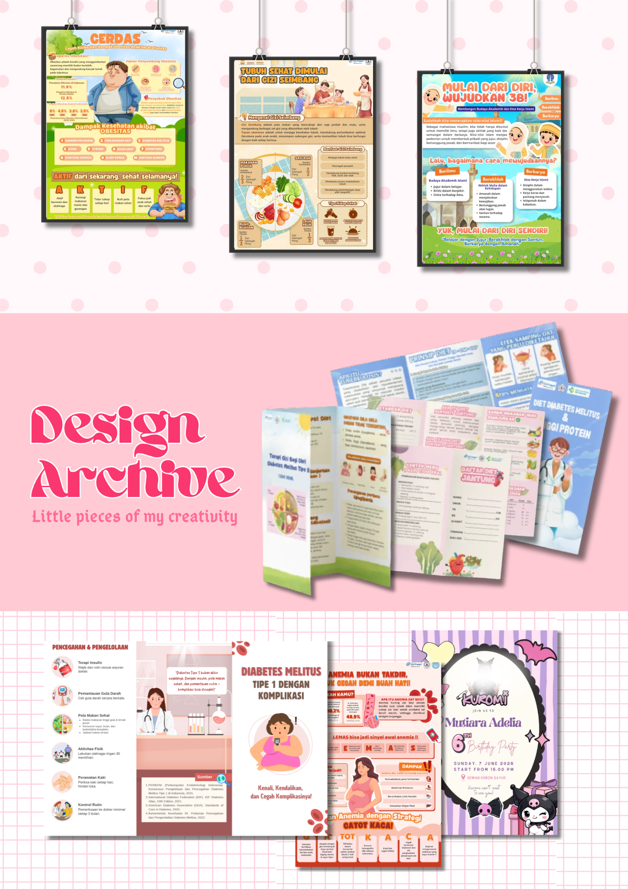
FreelanceIndependent / Freelance
Menjalani pekerjaan freelance di bidang desain grafis dengan menerima berbagai permintaan desain melalui rekomendasi dan jaringan pertemanan. Mengerjakan beragam kebutuhan visual, mulai dari poster, presentasi, banner, hingga pamflet. Dalam prosesnya, saya menyesuaikan konsep dan tampilan desain berdasarkan kebutuhan serta preferensi klien menggunakan Canva.
Setiap proyek menjadi ruang untuk belajar, bereksplorasi, dan menciptakan sesuatu yang bermakna.
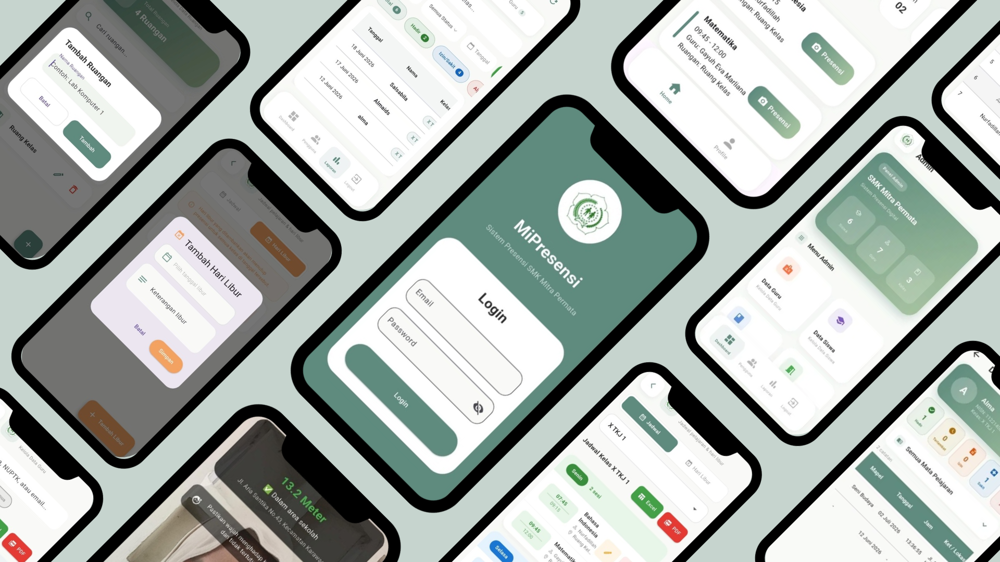
MiPresensi adalah aplikasi presensi berbasis Android yang saya kembangkan secara mandiri. Dalam proyek ini, saya melakukan analisis kebutuhan pengguna, menyusun Software Requirements Specification (SRS), mendokumentasikan alur sistem menggunakan UML, serta mengembangkan fitur presensi dengan integrasi kamera depan dan geolokasi.
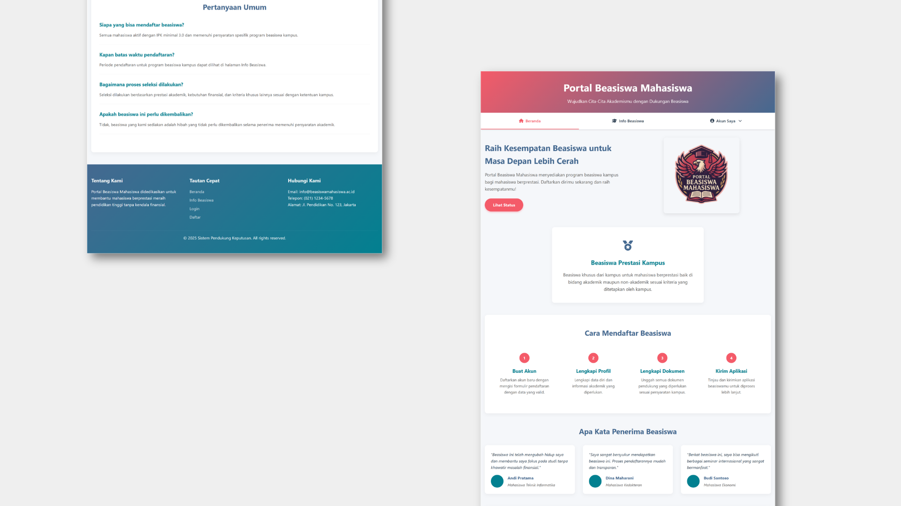
Portal Beasiswa Mahasiswa adalah website Sistem Pendukung Keputusan (SPK) yang dikembangkan secara berkelompok untuk membantu proses seleksi penerima beasiswa menggunakan metode Simple Additive Weighting (SAW). Dalam proyek ini, saya berkontribusi dalam pengembangan website, analisis kebutuhan sistem, penyusunan Product Requirements Document (PRD), serta penyusunan alur dan rancangan sistem menggunakan UML.
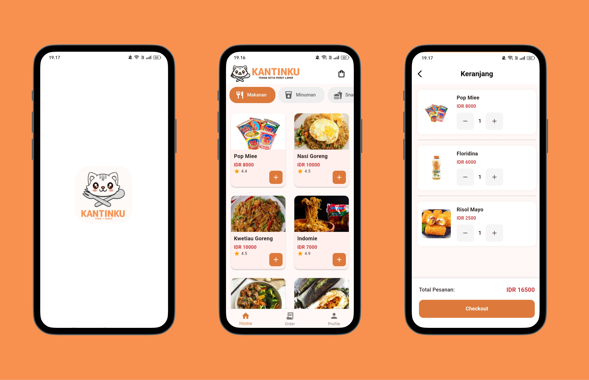
Kantinku adalah aplikasi pemesanan makanan berbasis mobile yang dikembangkan secara berkelompok. Dalam proyek ini, saya berkontribusi pada analisis sistem, pengembangan frontend, penyusunan laporan dan dokumentasi proyek, serta pembuatan video tutorial penggunaan aplikasi.
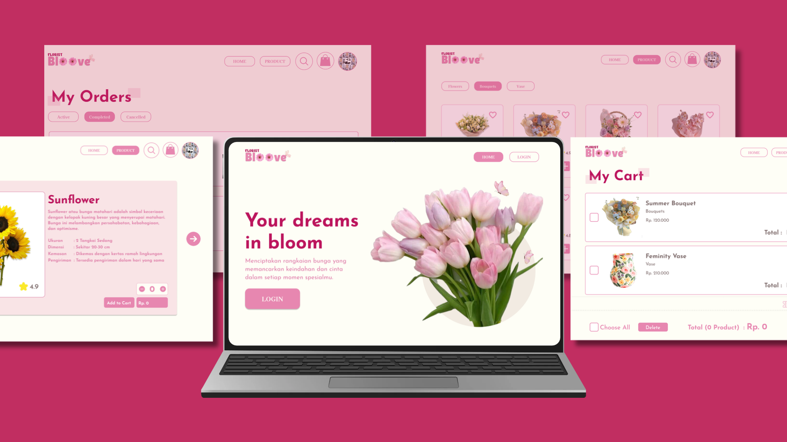
Bloove merupakan proyek desain UI website florist yang saya kerjakan secara mandiri, dengan fokus pada perancangan tampilan antarmuka yang modern, elegan, dan menarik.
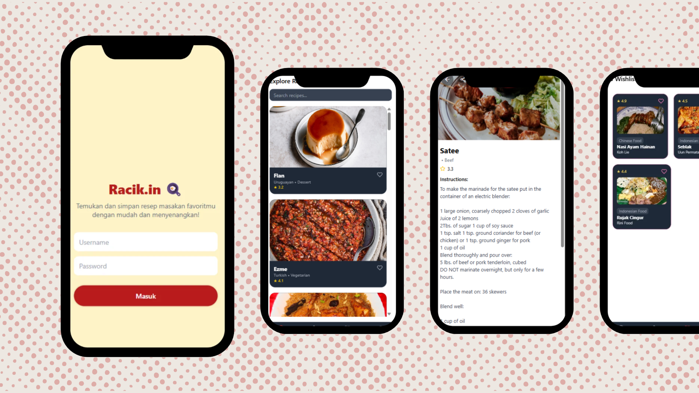
Racik.in merupakan proyek pengembangan UI aplikasi mobile berbasis resep makanan untuk memudahkan pengguna menemukan inspirasi masakan.
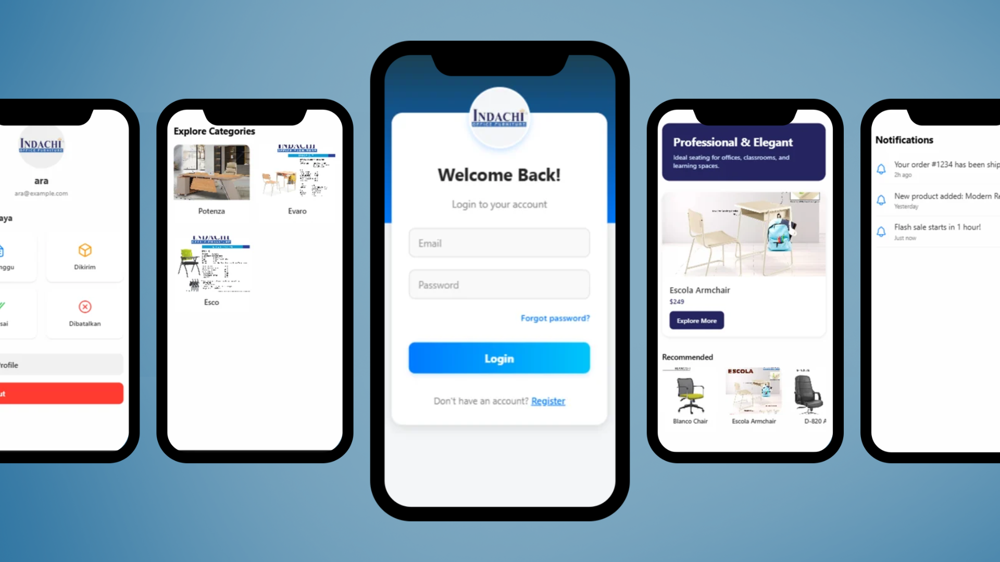
Indanchi Furniture adalah proyek pengembangan UI aplikasi mobile untuk menampilkan dan menjual berbagai macam furnitur berkualitas.
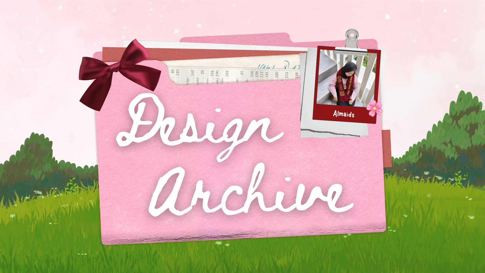
Design Archive merupakan kumpulan karya desain grafis yang saya buat, mulai dari poster, pamflet, banner, hingga presentasi menggunakan Canva.